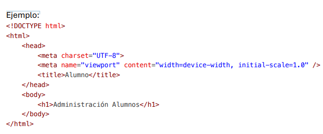
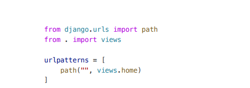
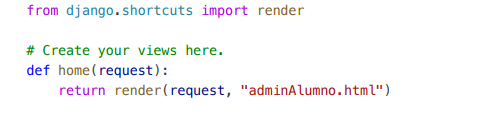

Primeros pasos para configurar un proyecto en Django
Esta guía cubre los pasos iniciales para crear y configurar un proyecto en Django desde la terminal, configurando las carpetas y aplicaciones necesarias para comenzar.
En la consola/terminal, selecciona la carpeta física donde vamos a contener nuestro proyecto:
cd Desktop/Django/practica2En la misma consola/terminal, crea el nuevo proyecto:
django-admin startproject moduloUna vez creado el proyecto, abre la carpeta en Visual Studio Code y selecciona una nueva terminal. Ahí, crea la carpeta que contendrá las aplicaciones (módulos) de nuestro proyecto:
En Windows: md modulo
En Mac: mkdir modulo
Ahora nos ubicamos dentro de la carpeta modulo:
cd moduloUna vez seleccionada la carpeta, crea nuestra primera aplicación/módulo del sistema:
django-admin startapp alumnoUna vez creada la aplicación, vuelve a la raíz de la carpeta:
cd ..Ahora se tiene que registrar la nueva aplicación creada en el archivo settings.py de la carpeta principal (proyecto2):
INSTALLED_APPS = [
"django.contrib.admin",
"django.contrib.auth",
"django.contrib.contenttypes",
"django.contrib.sessions",
"django.contrib.messages",
"django.contrib.staticfiles",
"modulo.alumno"
]En el mismo archivo settings.py, configura el nombre de la base de datos SQLite:
DATABASES = {
"default": {
"ENGINE": "django.db.backends.sqlite3",
"NAME": "DBALUMNO.db",
}
}Sobre el mismo archivo settings.py habrá que configurar el lenguaje y la zona horaria para la configuración del proyecto:
LANGUAGE_CODE = "es-mx"
TIME_ZONE = "America/Monterrey"
USE_I18N = True
USE_TZ = TrueAhora dentro de la aplicación creada (alumno) seleccionamos el archivo models.py para crear la arquitectura/modelo/clase que permite el mapeo de objetos relacionados “ORM” para la gestión de los datos en la base de datos:
class ALUMNO(models.Model):
IdAlumno = models.CharField(primary_key=True, max_length=10)
Matricula = models.CharField(max_length=10)
Nombre = models.CharField(max_length=80)
PrimerApellido = models.CharField(max_length=50)
SegundoApellido = models.CharField(max_length=50)Sobre la misma carpeta seleccionamos el archivo admin.py, el cual permitirá la gestión de la información con el administrador de Django:
from django.contrib import admin
from .models import ALUMNO
# Register your models here.
admin.site.register(ALUMNO)Volvemos a la terminal para realizar la migración inicial de nuestro proyecto (ejecutar y registrar cambios). En la terminal se escribe el siguiente comando. NOTA: Debemos estar en la carpeta raíz del proyecto (practica2). Si marca error, hay que revisar el archivo app.py y colocarle el nombre de la carpeta.
python manage.py migrateSi es necesario, también puedes agregar la configuración del nombre de la aplicación en app.py:
from django.apps import AppConfig
class alumnoConfig(AppConfig):
default_auto_field = "django.db.models.BigAutoField"
name = "modulo.alumno"A continuación, debes migrar el modelo creado como una tabla de SQL. Para eso, desde la consola, ejecuta la sentencia:
python manage.py makemigrationsEl superusuario va a permitir interactuar directamente con la interfaz de Django para el funcionamiento de permisos de administrador. Para crear el superusuario, ejecuta el siguiente comando:
python manage.py createsuperuserIgnora el error y coloca el usuario, correo y contraseña cuando te lo pida. Una vez creado el superusuario, vuelve a ejecutar el comando para aplicar las migraciones:
python manage.py migrateFinalmente, escribe el siguiente comando para ejecutar el servidor de desarrollo de Django:
python manage.py runserverDespués de iniciar el servidor, abre el navegador y visita la siguiente URL para ver la interfaz de administración de Django:
http://127.0.0.1:8000/adminInicia sesión con el superusuario creado anteriormente.
Una vez dentro del panel de administración, podrás agregar, editar y eliminar registros de tus modelos, como el modelo ALUMNO que creamos previamente.
Para agregar un modelo adicional, repite el proceso de crear el modelo en models.py y regístralo en admin.py. Después de crear nuevas migraciones, recuerda ejecutar:
python manage.py makemigrationsY luego aplicar las migraciones con:
python manage.py migrateEn el archivo models.py dentro de la carpeta de la aplicación, hay que agregar un método __str__ para poder crear una "vista" de registros dentro de los registros de la base de datos. Por ejemplo, para la aplicación de alumnos, puedes agregar el siguiente método:
def __str__(self):
alumno_detalle = "({0}) {1} {2} {3} {4}"
return alumno_detalle.format(self.IdAlumno, self.Matricula, self.Nombre, self.PrimerApellido, self.SegundoApellido)Este método ayudará a representar los objetos de la base de datos de una forma más legible y ordenada.
Ahora bien, se tienen que crear las interfaces gráficas/templates HTML + CSS + JavaScript para que el usuario pueda interactuar con la aplicación.
Para este paso, se puede cerrar sesión del admin de Django y podemos apagar el servidor presionando CTRL + C en la consola y cerrarlo.
Dentro de la carpeta del módulo, damos clic derecho y creamos una nueva carpeta bajo el nombre de templates. Hay que respetar este nombre porque Django reconoce esta carpeta como la contenedora de los archivos HTML.
Dentro de la carpeta templates creada, agregamos un nuevo archivo HTML llamado adminAlumno.html. En este archivo se crea toda la interfaz gráfica de la aplicación utilizando HTML5, CSS, y JavaScript. Además, se han utilizado algunos frameworks externos como Bootstrap y Font Awesome para mejorar la apariencia y funcionalidad de la interfaz.
A continuación, se muestra un ejemplo de cómo luce la interfaz:
Para configurar el proyecto para que reconozca la página web por medio de la interfaz debemos crear un nuevo archivo urls.py dentro de la aplicación para posteriormente configurar la nueva ruta de acceso.
A continuación, se muestra un ejemplo:
Ahora debemos configurar el archivo views.py para poder acceder a la ruta creada en el archivo urls.py creado anteriormente
A continuación, se muestra un ejemplo:
